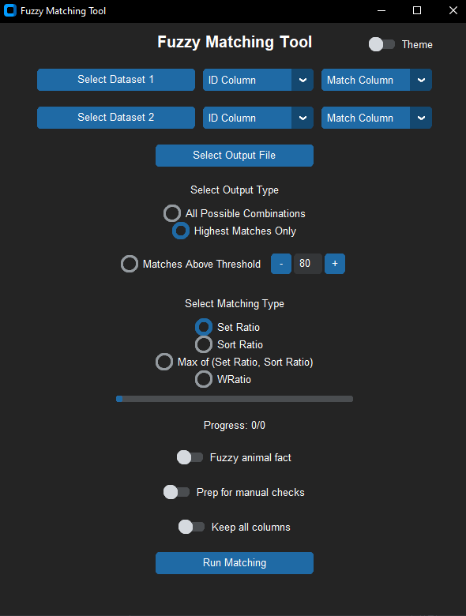
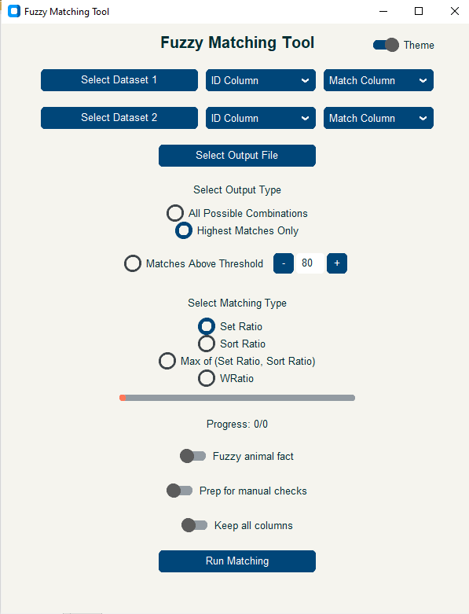

Fuzzy Matching Tool
A GUI-based tool for fuzzy string matching using RapidFuzz.
Features
- Import datasets: Supports
.xlsx,.csv, and.dtafile formats. Select columns for matching and uniquely identifying observations. - Export options: Save results in
.xlsx,.csv, or.dtaformats. - Output types:
- All possible combinations: Reports score for every possible match, grouped by ID in dataset 1.
- Highest possible matches: Reports the best match for each ID in dataset 1.
- Matches above a threshold: Groups matches by ID in dataset 1.
- Matching algorithms:
- Set Ratio: Compares unique/common words, ignoring extra/repeated words.
- Sort Ratio: Sorts words in strings before comparison.
- Max(Set Ratio, Sort Ratio): Returns the higher score of the two.
- WRatio: A weighted scoring method for enhanced accuracy.
- Additional settings:
- Fuzzy animal fact: Prints a fun fact about fuzzy animals in the completion message.
- Prep for manual checks: Adds columns for validation and comments, with color grouping for easier comparison.
- Keep all columns: Includes all columns from the original datasets in the output.
Matching Algorithms
| Algorithm | Description | Example |
|---|---|---|
| Set Ratio | Matches based on unique/common words, ignoring extras. |
|
| Sort Ratio | Sorts words before matching for order-independent matches. |
|
| Max(Set Ratio, Sort Ratio) | Uses the higher score of Set Ratio and Sort Ratio. |
|
| WRatio | Weighted score for better accuracy. |
|
Preview

